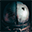
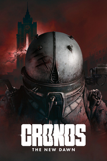

Cronos: The New DawnDetalles
 |
|
| Tiempo de juego | No Jugado |
| Última actividad | Nunca |
| Añadido | 9/4/2025 12:02:23 |
| Modificado | 9/4/2025 12:43:35 |
| Estado de finalización | Not Played |
| Librería | Playnite |
| Fuente | 4TB TANK |
| Plataforma | PC (Linux) PC (Windows) |
| Fecha de lanzamiento | 9/5/2025 |
| Puntuación de la Comunidad | 80 |
| Puntuación de la Crítica | |
| Puntuación de usuario | |
| Género | Acción |
| Desarrollador | Bloober Team |
| Editor | Bloober Team SA |
| Característica | Cloud Saves Compat. Total Con Mando HDR Disponible Logros De Préstamo Familiar Un Jugador |
| Enlaces | Punto de encuentro Discusiones Guías Noticias Página de la tienda PCGamingWiki Logros |
| Tag | Acción Acción y aventura Ambientales Buena trama Ciencia ficción Combate Difíciles Disparos en tercera persona Distopías Fabricación Futuristas Gestión de recursos Oscuros Posapocalípticos Sangriento Supervivencia / Terror Tercera persona Terror Un jugador Viajes en el tiempo |
Descripción
Cronos: The New Dawn es un juego de supervivencia y terror en tercera persona en el que lucharás por salvaguardar el futuro protegiendo el pasado. Quema monstruos antes de que se fusionen. Extrae almas de los vivos. Adáptate o muere.

Un juego ambientado en un mundo lúgubre que mezcla la tecnología retrofuturista con el brutalismo de Europa del Este. En Cronos: The New Dawn descubrirás una historia que desdibuja los límites entre el pasado y el futuro.
En el pasado, explorarás un mundo sumido en el Cambio, un cataclismo que transformó a la humanidad para siempre. Mientras tanto, en los páramos arrasados del futuro, cada instante se convierte en una lucha por la supervivencia contra peligrosas abominaciones que pondrán a prueba tus reflejos y tu pensamiento estratégico.
Eres una viajera, una agente del enigmático Colectivo, a quien se le encomendó la tarea de explorar el futuro en busca de portales del tiempo que te transportarán a la Polonia de los ochenta.

En un mundo desolado donde el peligro acecha en cada esquina, tu supervivencia dependerá de la estrategia que sigas. Los enemigos que te encontrarás son criaturas aterradoras nacidas de los restos de la humanidad; para derrotarlas, tendrás que emplear todo tu arsenal.
Puedes manipular las anomalías temporales para abrirte paso a través del entorno desolador que te espera, y además, tendrás que rapiñar recursos para reponer suministros y munición. La clave para la supervivencia es prepararse bien. Durante el combate, las decisiones rápidas marcarán la diferencia entre la vida y la muerte.

Las criaturas que mates no estarán muertas mucho tiempo. Los enemigos pueden absorber a otros enemigos caídos mediante un grotesco proceso llamado «Fusión» y volverse más rápidos, más duros y muchísimo más peligrosos.
¿Y cuál es la única forma de evitarlo? Quemarlos. Y cuanto más rápido, mejor.
Si no, te enfrentarás a abominaciones cada vez más poderosas que pondrán tus habilidades al límite.

Tu misión consiste en hallar a personas importantes del pasado que perecieron en la catástrofe. Valiéndote de tu poderosa Segadora, podrás extraer sus esencias para que te acompañen al futuro.
Pero, atención: dichas esencias tendrán un gran impacto en tu aventura.
Cuántas más esencias lleves, más maldito se volverá tu traje, lo que hará que seas más poderoso en combate, aunque también hará que oigas susurros, veas destellos y que vayas perdiendo tu cordura poco a poco.